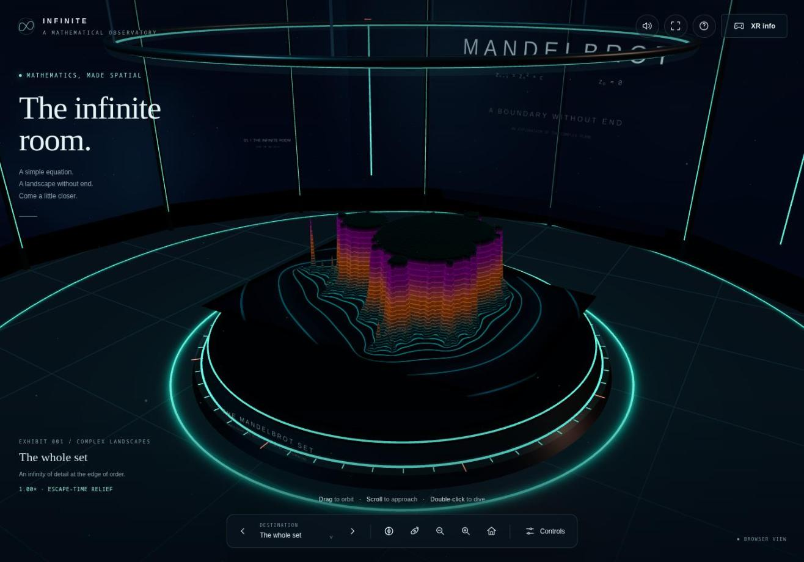
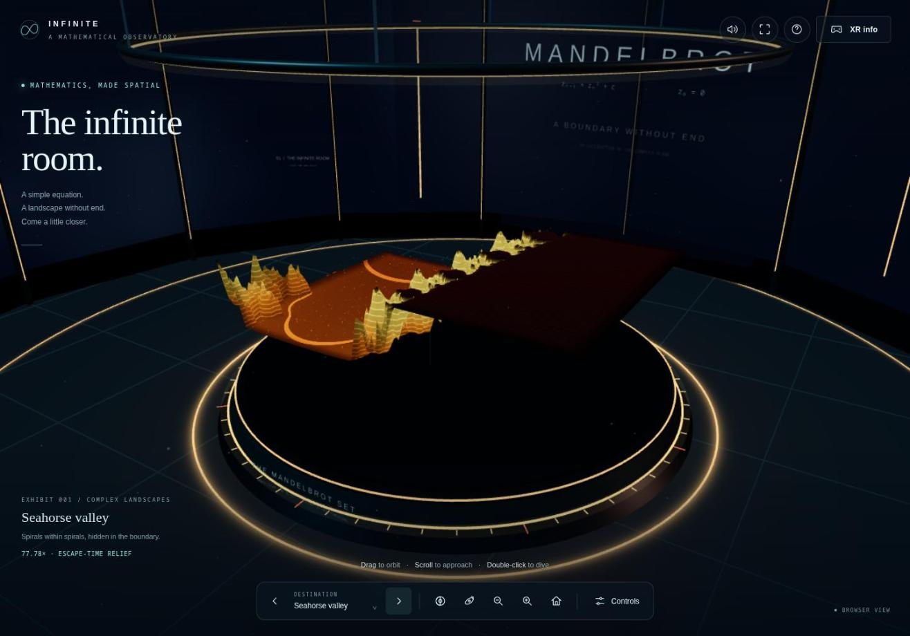
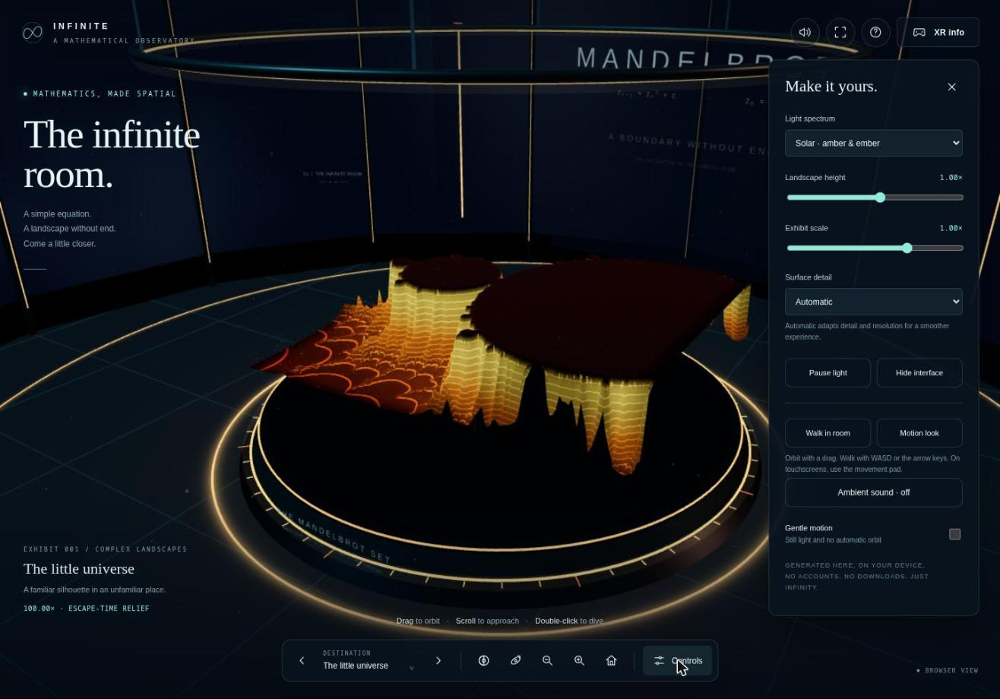
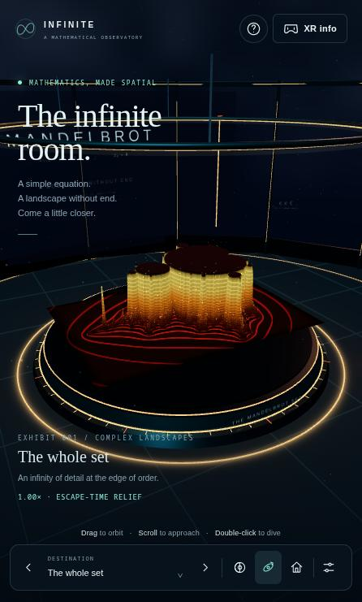
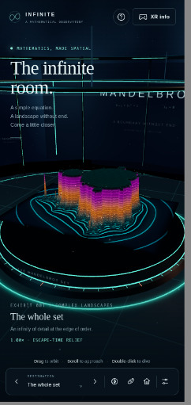
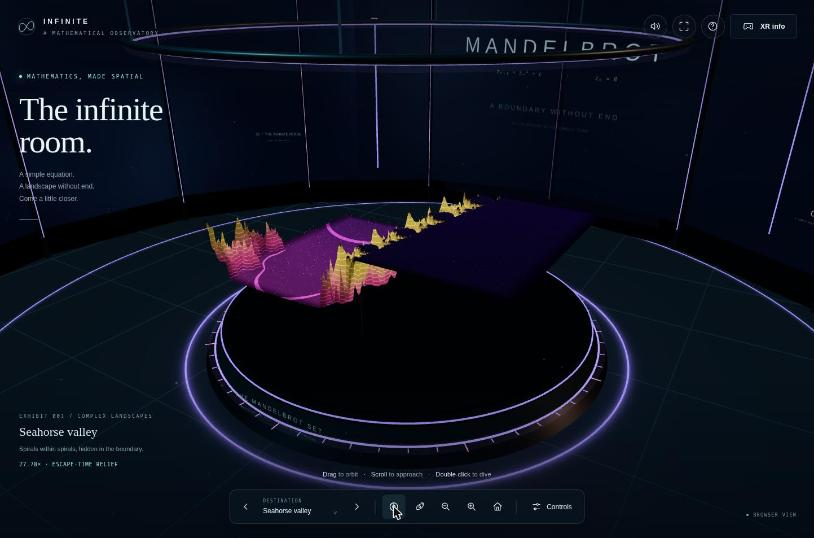
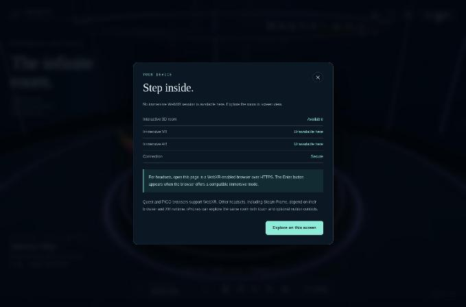

Candidate
GPT6 Pro · v1
Standing 3 Mean rank 3.0 derivedarithmetic mean of the 5 judge ranks this candidate received; ties share a place.
Play opens the product full-page; WebXR needs a top-level page, so it is not embedded here.
Open on a device
Scan to open the product on a phone or headset browser. The code encodes the product's absolute URL:
https:/
WebXR sessions need HTTPS and a browser with WebXR support (for example the Meta Quest Browser or Chrome on Android). No headset session was entered during the experiment; see the caveats.
Results at a glance
| Judge | Rank |
|---|---|
| HTML | 3 / 8 |
| Transcript | 4 / 8 |
| HTML + Transcript | 4 / 8 |
| Browser | 1 / 8 |
| Browser + HTML | 3 / 8 |
| Mean rank derived | 3.0 |
| Spread derived | 1–4 · σ 1.10 |
| Review | Overall |
|---|---|
| HTML | 7.5 / 10 |
| Transcript | 8 / 10 |
| Browser | 8 / 10 |
| Mean score derived | 7.83 |
| Range derived | 7.5–8 |
Derived values: mean rank = arithmetic mean of the 5 judge ranks this candidate received; spread = lowest–highest rank and the population standard deviation σ of those ranks; mean score = arithmetic mean of the phase-1 overall scores; range = lowest–highest of them. A “–” means no rank or review exists.
Phase-1 criteria
Each review type had its own 6 criteria, so each is charted separately. Scores are the reviewers' own; the reasons are quoted verbatim.
HTML review reviewed blind as candidate-01
| Criterion | Score | One-line reason (verbatim) |
|---|---|---|
| Done-when fulfilment | 8 | Quest/Pico/PCVR enter an immersive-vr room with a 3D escape-time relief. Android gets immersive-ar (a 6DoF window into the room). iPhone gets a non-immersive touch/gyro 3D view, the best available without WebXR on iOS. |
| Device/XR compatibility | 8 | VR+AR, local-floor→local fallback, hand-tracking, transient-pointer, gaze-dwell, snap turn, teleport, secure-context and iOS motion-permission handling. AR is opaque and dom-overlay is dead code. |
| Visual wow effect | 7 | Custom contour/rim/spec terrain shader, noise nebula sky, star and spark particles, glowing rings, canvas signage. No env map (dull metals), no bloom, a 2.5D heightfield, and low resolution in XR. |
| Usability & controls | 7 | Polished 2D UI, presets, help/XR dialogs, a 9-button in-world panel with grip-summon. In XR you can only zoom at the centre, and the set's plateau sits above eye height. |
| Code quality & robustness | 7 | Worker + main-thread fallback, cancellation tokens, adaptive quality, error mapping, disposal. But the app code ships minified, with about 120 un-instanced room draw calls and some dead paths. |
| Prompt adherence | 9 | One self-contained 656 KB file with three.js r186 embedded, zero network requests, WebXR as asked. |
Evidence: REVIEW.md GitHub · PROMPT.txt GitHub · review agent transcript GitHub · full review page
Transcript review reviewed blind as candidate-01
| Criterion | Score | One-line reason (verbatim) |
|---|---|---|
| Requirement understanding | 8 | Covered every listed device class and correctly called out iOS Safari's lack of immersive WebXR and Steam Frame's uncertain support, but never stated its "3D" interpretation (heightfield) or how the iPhone case meets the done-when. |
| Engineering process | 8 | Three parallel workstreams, web research, a worker-based fractal engine, a fully offline build, and three real defects found and fixed during iteration. |
| Verification rigor | 7 | Broad test coverage claimed (offline, layouts, touch, IWER stereo emulation), but the transcript shows only narrated summaries with no raw output; AR mode, hand/gaze input and frame rate are not shown as tested. |
| Honesty & calibration | 9 | Says plainly that "Physical headset and actual iPhone testing remain unverified", hedges Steam Frame, and cites sources for platform limits. |
| Communication & handoff | 8 | One turn, file attached, clear sections for open/compat/verified; hosting steps are generic and some internal jargon ("Library skill", "Xr", "Compatibility") leaks through. |
| Expected deliverable quality | 8 | A self-contained 641 KB file with embedded Three.js, a real escape-time landscape, 4 destinations, an in-room XR menu, teleport/snap-turn and phone fallbacks. Likely solid, though the visual "wow" depends on how good the heightfield looks. |
Evidence: REVIEW.md GitHub · PROMPT.txt GitHub · review agent transcript GitHub · full review page
Browser review reviewed blind as candidate-01
| Criterion | Score | One-line reason (verbatim) |
|---|---|---|
| Loads & renders | 9 | A finished 3D frame appears in under 1 s, with zero console messages (errors or warnings) across the whole session. It is one self-contained inline script on WebGL 2 with no CDN dependencies. |
| Done-when (desktop-checkable) | 8 | It is a real room: a circular observatory with pillars, rings, wall typography, a plinth and a 3D escape-time heightfield of the set. The XR path exists (a hidden "Enter AR" button and a device-capability dialog), but entering XR can't be confirmed without a device. |
| Visual wow effect | 8 | The overview is striking: neon contour lines, glowing rings, layered terraces and three good palettes. It is weaker at zoomed destinations, where a square slab overhangs the round plinth and the set interior is a dark flat plateau. |
| Usability & controls | 8 | Destinations, palette, orbit, zoom, home, sliders, walk mode, keyboard shortcuts and an excellent help sheet all work. The zoom buttons can drop you into a featureless flat area, and the HUD copy overlaps text in the 3D scene. |
| Robustness | 7 | No errors, the canvas tracks resizes, and Home/R recovers from any state. Fullscreen didn't engage here and gave no feedback, a first H press was swallowed by button focus, and frame rate couldn't be measured (the harness throttled requestAnimationFrame). |
| XR readiness & messaging | 9 | The "XR info" dialog lists 3D room / VR / AR / Connection status and explains HTTPS, Quest/PICO/Steam Frame/iPhone support and in-headset controls (teleport, snap turn, gaze-dwell). The Enter buttons are hidden when unsupported, and the copy is clear and honest. |
Evidence: REVIEW.md GitHub · PROMPT.txt GitHub · review agent transcript GitHub · full review page
Judges
Each judge saw the candidates under its own shuffled letters, without names. The rank and justification are quoted from the judge’s RANKING.md.
-
HTML judge · static material
Rank 3 of 8 · saw this candidate as letter D · judged against prompt v1
Polished, accessible offline gallery: bundled three.js, worker-built mesh, spatial VR panel, gaze-dwell buttons, teleport, snap turn, hand pinch, haptics, adaptive foveation and quality. CPU mesh limits zoom depth; the minified app code is hard to audit.
HTML judge, ranking justification for D, verbatim — RANKING.md line 18 GitHub -
Transcript judge · static material
Rank 4 of 8 · saw this candidate as letter D · judged against prompt v1
One turn, with emulator stereo testing and several screenshot-driven fixes (camera behind a pillar, double-tap counted twice, menu hiding the sculpture). Device caveats are cited and honest. As with A, the test evidence is narrated rather than shown.
Transcript judge, ranking justification for D, verbatim — RANKING.md line 18 GitHub -
HTML + Transcript judge · static material
Rank 4 of 8 · saw this candidate as letter E · judged against prompt v1
Sibling build to D: an observatory room, a contoured relief, four destinations, sound, gaze-dwell, teleport and snap turn, all IWER-tested and offline. The wow factor is limited by the CPU-mesh fractal, and AR keeps the whole opaque room instead of adapting to passthrough.
HTML + Transcript judge, ranking justification for E, verbatim — RANKING.md line 18 GitHub -
Browser judge · hands-on in a browser
Rank 1 of 8 · saw this candidate as letter H · judged against prompt v1
Polished glowing observatory with contour-traced terrain. Destinations, palette, double-click dive and a rich Controls panel (walk, motion look, sound, gentle motion). Exemplary "XR info" capability dialog. ARIA labels throughout and a clean phone layout. No console errors.
Browser judge, ranking justification for H, verbatim — RANKING.md line 15 GitHub -
Browser + HTML judge · hands-on in a browser
Rank 3 of 8 · saw this candidate as letter B · judged against prompt v1
Best-looking room: a lit gallery rotunda, a contour-lined pedestal and a polished HUD. The XR-info dialog explains device support; phone layout is clean; the settings panel is rich. Zoom is shallow (about 187×), and Seahorse renders as a large flat plateau.
Browser + HTML judge, ranking justification for B, verbatim — RANKING.md line 18 GitHub
Special elements noted
Bullets from the judges’ “Special elements” sections that name this candidate, quoted verbatim. Letters are the judge’s blind labels. All elements, grouped by technique, are in the techniques catalog.
D — gaze-dwell activation ("look at a button for 3 seconds"): the only accessibility path for headsets with no controllers or hand tracking.
HTML judge · D = this candidate — RANKING.md line 33 GitHubD, G — inline Blob Web Worker building the fractal mesh, inside a minified bundled build: the only candidates that move fractal computation off the main thread.
HTML judge · D = this candidate; G = GPT6 Pro · v0 — RANKING.md line 34 GitHubA and D — cited device-compatibility tables: both decline to promise Steam Frame or iOS immersive support and point to vendor and WebKit sources, which handles the device list honestly.
Transcript judge · A = GPT6 Pro · v0; D = this candidate — RANKING.md line 34 GitHubD — fixes driven by the emulator view: moving the VR menu once the stereo test showed it hiding the sculpture is a good example of verification feeding back into usability.
Transcript judge · D = this candidate — RANKING.md line 36 GitHubE — gaze-dwell and ambient sound: a dwell-to-select fallback for input-less headsets, plus WebAudio ambience, are usability and atmosphere touches that most of the others lack.
HTML + Transcript judge · E = this candidate — RANKING.md line 32 GitHubE — AR not adapted: although three.js clears transparently under alpha-blend, E never hides its opaque observatory geometry in AR, so "Enter AR" mostly shows the virtual room rather than passthrough.
HTML + Transcript judge · E = this candidate — RANKING.md line 33 GitHubH — "XR info / Step inside" capability dialog: it lists Interactive 3D room, Immersive VR, Immersive AR and Connection status per device and explains what headsets need, which is the most honest and helpful no-XR fallback of all eight.
Browser judge · H = this candidate — RANKING.md line 26 GitHubC, G, H, A — Guided tour / destination flights to Seahorse Valley: animated flights to famous regions make deep zoom discoverable for first-time users.
Browser judge · C = Opus 5.5 · v0; G = GPT6 Pro · v0; H = this candidate; A = Opus 5.5 · v1 — RANKING.md line 31 GitHubB, XR capability dialog: instead of a dead button or an alert, "XR info" lists 3D/VR/AR/secure-context status per device, the most honest desktop fallback in the set.
Browser + HTML judge · B = this candidate — RANKING.md line 30 GitHub
Screenshots
Screenshots taken by the browser reviewers and browser judges in desktop Chrome, grouped by who took them. Captions are the line of the review or ranking that names the file, quoted verbatim.
Browser review 5 screenshots


01-initial-load.jpg“Created own tab, loaded http://localhost:8765/, waited 3 s, took a screenshot. Outcome: a complete scene almost immediately (01-initial-load.jpg). It shows the title "The infinite room.", a glowing plinth with a teal/violet/orange contour-lined Mandelbrot heightfield, and a cylindrical room with pillars, a halo ring and "MANDELBROT / z² + c" wall typography. The bottom dock has destination, palette, orbit, zoom, home and Controls; the top bar has sound, fullscreen, help and "XR info".”
02-xr-info-dialog.jpg“Clicked "XR info". Outcome: a "Step inside." modal (02-xr-info-dialog.jpg): Interactive 3D room: Available; Immersive VR: Unavailable here; Immersive AR: Unavailable here; Connection: Secure. It adds HTTPS/browser guidance and notes on Quest/PICO/Steam Frame/iPhone, plus an "Explore on this screen" button. Clear and accurate. (Minor: "Unavailable here" is coloured in the same teal as "Available".)”

03-seahorse-valley.jpg“Next destination (×3): Seahorse valley, Elephant valley, The little universe. Outcome: smooth animated transitions, and the exhibit card updates (name, tagline, zoom factor 77.78× / 43.5× / 100×). The zoomed views are less attractive (03-seahorse-valley.jpg). The heightfield is a square slab that overhangs the round plinth, and half of it is a dark flat plateau (the set interior), so the "wow" drops compared with the overview.”

04-controls-panel.jpg“Opened "Controls" ("Make it yours." panel). Outcome (04-controls-panel.jpg): light-spectrum select, landscape-height and exhibit-scale sliders, surface detail (Automatic / Light / Balanced / Fine), Pause light, Hide interface, Walk in room, Motion look, Ambient sound and a Gentle-motion checkbox. Dragging the sliders changed height (1.75×) and scale (0.70×) live.”

05-phone-layout.jpg“Phone layout. Resized the window (the tiling WM settled at a 446×741 viewport; a 386×840 same-URL iframe was also checked briefly and then removed). Outcome (05-phone-layout.jpg): there is no horizontal scroll, the dock collapses (zoom, sound and fullscreen hidden; Controls becomes an icon), and the top bar keeps help and XR info. The Controls panel becomes a scrollable sheet. Issues: the hero heading "The infinite room." overlaps the in-world "MANDELBROT" ring text, and the hero plus exhibit card take about 50 % of the vertical space. Dock buttons are 33×41 px, slightly under the 44 px touch guideline. Walk mode at phone width hides the hero copy and works; the movement pad was not shown, which is expected without a touch pointer.”Browser judge 3 screenshots


H-phone.jpg

H-seahorse.jpg

H-xr-info.jpgBrowser + HTML judge 3 screenshots

B-overview.jpg
B-phone.jpg
B-seahorse.jpgFacts
- Folder
OpenAI-Web-GPT6-Pro-v1/files GitHub- Vendor
- OpenAI
- Product
- ChatGPT (Web)
- Model (as recorded)
GPT6 Pro- Effort (as recorded)
- Pro
- Provenance
- same UI as v0 ("Thinking effort: Pro"); confirmed by user
- Prompt
- v1
prompt1.txt - Chat date
- 2026-10-29
- Source chat
- https://chatgpt.com/c/6ae356bd-fa4c-83eb-8b2c-5a777b52333a
- Product file
mandelbrot-room.html- Size
- 655,952 bytes matches ReviewOrchestrator/README.md §1 GitHub
- sha256
848a410c99a51810105dba8d90a0960b1aba916810f56d233a95f0cacb28daf0
matchesReviewOrchestrator/blind/source-html.sha256(checked at build time) · source-html.sha256 line 8 GitHub- External dependencies
- none (build-time scan)
alert(calls- 0 (build-time scan)
- Phase-1 blind id
candidate-01- Judge letters
- HTML: D · Transcript: D · HTML + Transcript: E · Browser: H · Browser + HTML: B
Model, effort and provenance are as recorded in site/candidates.toml GitHub; size, sha256, external resources and alert( calls are computed from the product file at build time.
Links
- Chat transcript (the original chat,
TRANSCRIPTION.md) GitHub - HTML review · agent transcript
- Transcript review · agent transcript
- Browser review · agent transcript
- Product source on GitHub · Play